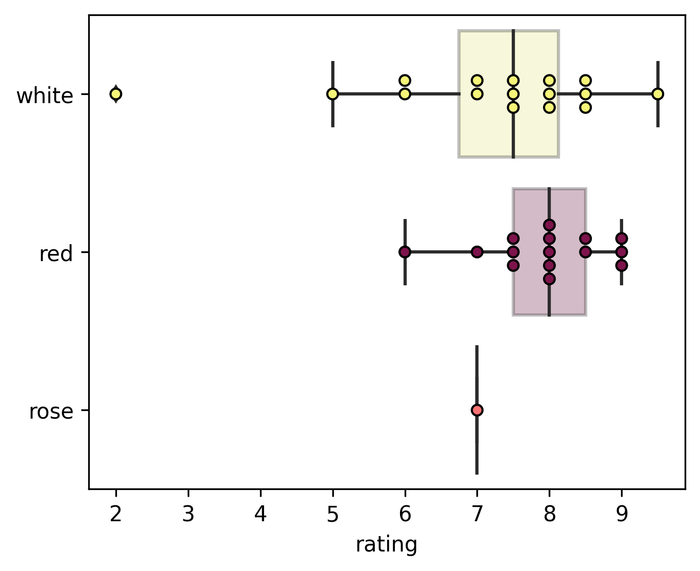
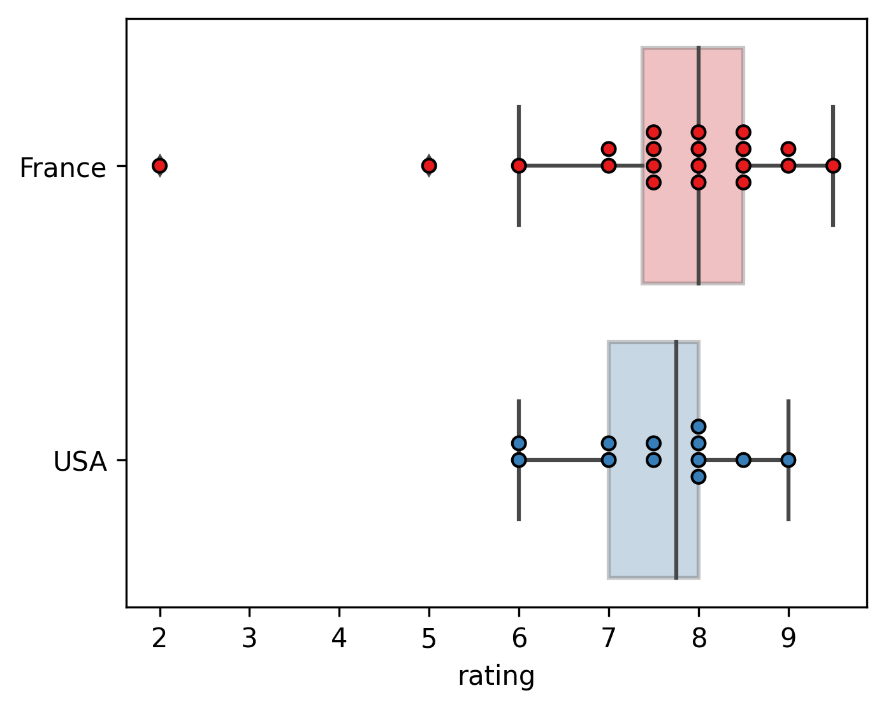
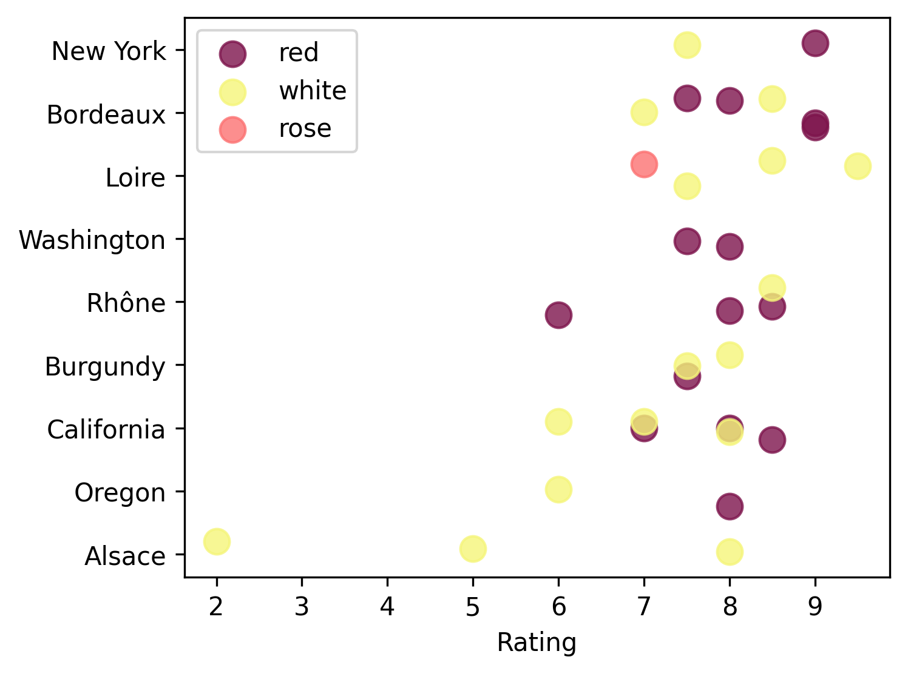
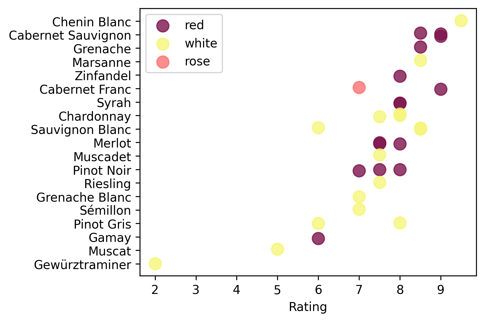
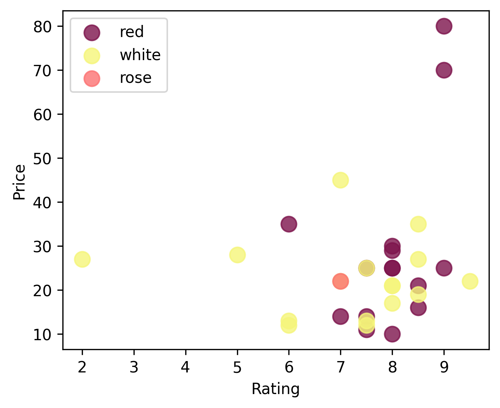
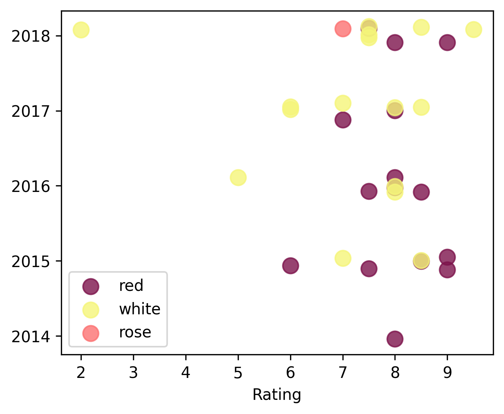

Wine Rating Data
An analysis of my wine ratings from HADM 4300: Introduction to Wines.
Before the semester went fully online due to COVID, I had a lot of fun tasting wines in HADM 4300: Introduction to Wines. As part of the class, we tasted about six wines each week and recorded notes on them, including a 1-10 rating. Before leaving the class, I tasted and rated 32 wines from the US and France (they covered other regions later). After finding my notes from that semester, I thought it would be fun to do a bit of data analysis.
The big questions: White or red? France or USA?
|
 Figure 1: Ratings by color |
 Figure 2: Ratings by country |
I tended to prefer reds to whites and (ever so slightly) French wines to US wines. However, with such a small dataset, the differences are not statistically significant (t-test p-values of 0.12 and 0.97 for red/white and France/USA).
A closer look: Regions and varieties
|
 Figure 3: Ratings by region |
 Figure 4: Ratings by dominant variety |
Unsurprisingly, I liked Bordeaux reds (Cabernet Sauvignon over Merlot) and Loire whites. Perhaps somewhat more surprising is New York topping the average rating list, thanks to a really great Long Island Cabernet Franc and a pretty good Finger Lakes Riesling. Je suis vraiment désolé, Alsace, but I really didn’t like the funkiness of the Gewürztraminer and Muscat we tried. My favorite wine was a Loire Chenin Blanc, the only 9.5 I gave.
Other factors: Price and vintage
|
 Figure 5: Rating vs price |
 Figure 6: Ratings by year |
I don’t seem to have any particular preference for year or be influenced much by price (I gave all ratings price-blind). The Pearson correlation between price and rating is 0.19 (p=0.29). However, the two most expensive wines we tasted were both fantastic: Château Langoa Barton and Château Pédesclaux.
Conclusions
- Try more Chenin Blanc
- When in doubt, go for a Bordeaux Cabernet Sauvignon
- Need more data!
Raw data
In decending rating order:
| Name | Rating | Year | Region | Dominant Variety | Color | Price |
|---|---|---|---|---|---|---|
| Marc Brédif Classic | 9.5 | 2018 | Loire | Chenin Blanc | white | $22 |
| Lieb Cellars Estate | 9.0 | 2018 | New York | Cabernet Franc | red | $25 |
| Château Langoa Barton | 9.0 | 2015 | Bordeaux | Cabernet Sauvignon | red | $80 |
| Château Pédesclaux | 9.0 | 2015 | Bordeaux | Cabernet Sauvignon | red | $70 |
| Vidal-Fleury | 8.5 | 2015 | Rhône | Marsanne | white | $35 |
| Château de Sancerre | 8.5 | 2017 | Loire | Sauvignon Blanc | white | $27 |
| Château Graville-Lacoste | 8.5 | 2018 | Bordeaux | Sauvignon Blanc | white | $19 |
| André Brunel Côtes du Rhône | 8.5 | 2016 | Rhône | Grenache | red | $16 |
| Picket Fence | 8.5 | 2015 | California | Cabernet Sauvignon | red | $21 |
| Barton & Guestier Saint-Émilion | 8.0 | 2016 | Bordeaux | Merlot | red | $25 |
| Cline Old Vine | 8.0 | 2017 | California | Zinfandel | red | $10 |
| Domaine Philippe & Vincent Jaboulet | 8.0 | 2014 | Rhône | Syrah | red | $30 |
| Gramercy Cellars Lower East | 8.0 | 2016 | Washington | Syrah | red | $25 |
| Frei Brothers Sonoma Reserve | 8.0 | 2017 | California | Chardonnay | white | $17 |
| Maison Champy Cuvée Edme | 8.0 | 2016 | Burgundy | Chardonnay | white | $21 |
| Hugel Classic | 8.0 | 2016 | Alsace | Pinot Gris | white | $21 |
| Patricia Green Cellars Reserve | 8.0 | 2018 | Oregon | Pinot Noir | red | $29 |
| Louis Jadot Couvent des Jacobins | 7.5 | 2015 | Burgundy | Pinot Noir | red | $25 |
| Pieuré St.-Flaurent Réserve | 7.5 | 2018 | Bordeaux | Merlot | red | $11 |
| Louis Jadot Chablis | 7.5 | 2018 | Burgundy | Chardonnay | white | $25 |
| Columbia Winery | 7.5 | 2016 | Washington | Merlot | red | $14 |
| Chateau LaFayette Reneau Dry | 7.5 | 2018 | New York | Riesling | white | $13 |
| Clos de la Sénaigerie Sur Lie | 7.5 | 2018 | Loire | Muscadet | white | $12 |
| Château de Myrat | 7.0 | 2015 | Bordeaux | Sémillon | white | $45 |
| Margerum M5 White | 7.0 | 2017 | California | Grenache Blanc | white | $22 |
| Charles Joguet | 7.0 | 2018 | Loire | Cabernet Franc | rose | $22 |
| Tarrica Wine Cellars | 7.0 | 2017 | California | Pinot Noir | red | $14 |
| Sterling Vintner’s Collection | 6.0 | 2017 | California | Sauvignon Blanc | white | $12 |
| Rainstorm | 6.0 | 2017 | Oregon | Pinot Gris | white | $13 |
| Domaine de Fa Roche Guillon | 6.0 | 2015 | Rhône | Gamay | red | $35 |
| Domaine Ostertag Fronholz | 5.0 | 2016 | Alsace | Muscat | white | $28 |
| Domaine Zind-Humbrecht | 2.0 | 2018 | Alsace | Gewürztraminer | white | $27 |
Topics Other